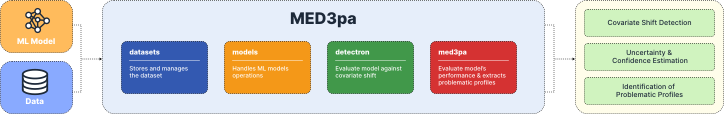

Welcome to MED3pa documentation!
Overview
{kind=link}
Use and Application of the package
The MED3pa package is specifically designed to address critical challenges in deploying machine learning models, particularly focusing on the robustness and reliability of models under real-world conditions.
It provides comprehensive tools for evaluating model stability and performance in the face of covariate shifts, and problematic data profiles.
Key functionalities
Covariate Shift Detection: Utilizing the detectron subpackage, MED3pa can identify significant shifts in data distributions that might affect the model’s predictions. This feature is crucial for applications such as healthcare, where early detection of shifts can prevent erroneous decisions.
Uncertainty and Confidence Estimation: Through the med3pa subpackage, the package measures the uncertainty and predictive confidence at both individual and group levels. This helps in understanding the reliability of model predictions and in making informed decisions based on model outputs.
Identification of Problematic Profiles: MED3pa analyzes data profiles that consistently lead to poor model performance. This capability allows developers to refine training datasets or retrain models to handle these edge cases effectively.
Software Engineering Principles
The MED3pa package is constructed with a strong emphasis on software engineering principles, making it a robust and scalable solution for machine learning model evaluation:
Modular Design: The package is structured into four distinct subpackages (detectron, med3pa, models, and datasets), each focusing on different aspects of model training and evaluation. This modularity allows users to easily integrate and utilize specific functionalities tailored to their needs without dealing with unnecessary complexities.
Extensibility: Thanks to its modular architecture, the package can be effortlessly extended to include more functionalities or adapt to different use cases. New models, methods, or data handling procedures can be added with minimal impact on the existing system structure.
Use of Design Patterns: MED3pa employs various design patterns that enhance its maintainability and usability. For example, the use of factory patterns in model creation and strategy patterns in handling different file extensions ensures that the system remains flexible and adaptable to new requirements.
Subpackages
The package is structured into four distinct subpackages : datasets, models, detectron and med3pa, each focusing on different aspects of the package goals.
This modularity allows users to easily integrate and utilize specific functionalities tailored to their needs without dealing with unnecessary complexities.
Tutorials
Welcome to the tutorials section of the med3pa documentation. Here, we offer comprehensive, step-by-step guides to help you effectively utilize the various subpackages within med3pa.
Each tutorial is designed to enhance your understanding of the package’s capabilities and to provide practical examples of how to integrate these tools into your data science and machine learning workflows.
Explore each tutorial to learn how to make the most of MED3pa’s robust functionalities for your projects.